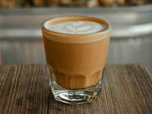

Cortado

Description
A cortado is a small espresso drink consisting of equal parts espresso annd steamed milk.
The cortado originated in Spain. Cortado means 'cut' and the drink is called this because
the espresso is 'cut' with milk.
Ingredients
- Your choice of coffee beans for espresso
- 2-3 oz milk
Steps
- Pull a regular double shot of espresso in a 4oz glass or mug.
- Steam your milk and pour into glass with coffee.
Homepage